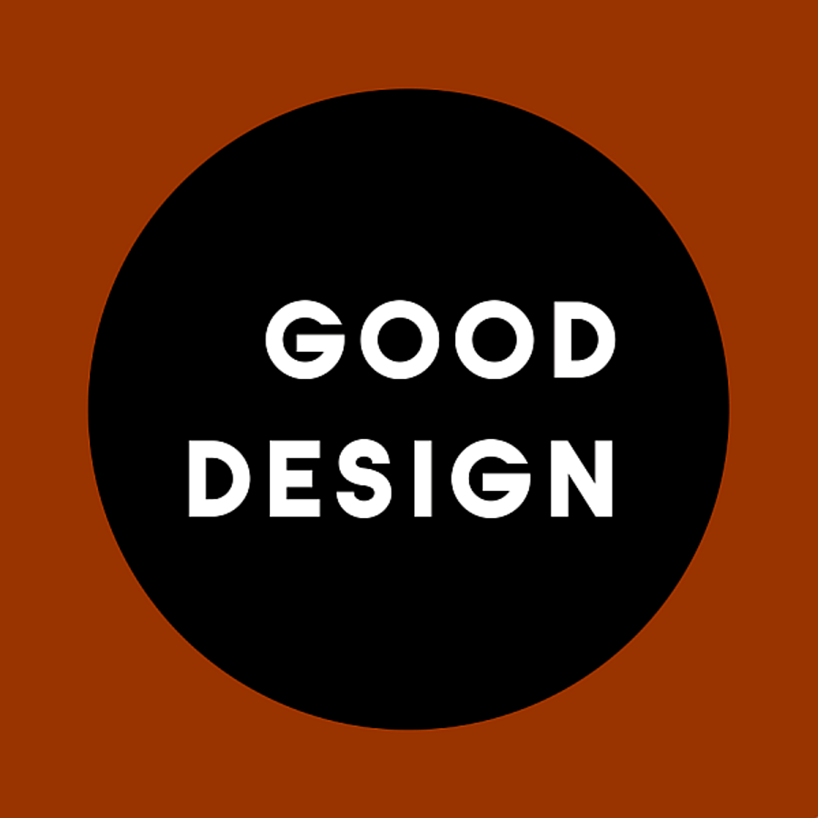
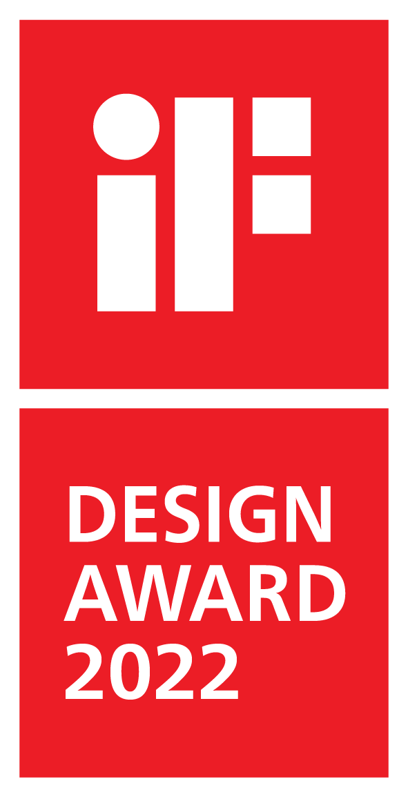
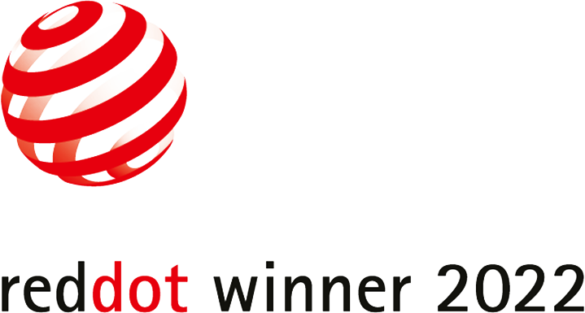
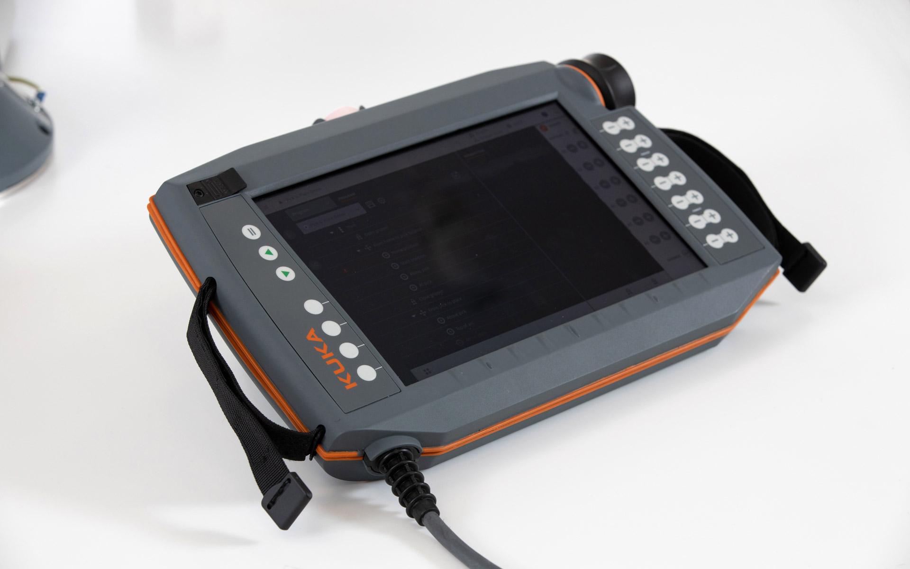

KUKA smartPAD pro
Robot Control Panel
KUKA smartPAD pro
Roboter-Programmierpanel
The smartPAD pro is a weight-reduced and anatomically shaped control panel for robot programming.
Its ergonomic design without annoying edges offers various holding options for long, relieving and
comfortable use for both left- and right-handed people. 2 domes on the underside allow another holding
option and at the same time offer a desk-shaped storage option as a tabletop device. Straps prevent the
control panel from slipping.
Its shockproof 2-component plastic housing with an all-round, elastic bumper strip is designed for
robust and universal industrial use and even withstands the drop test from a height of 1.5 meters. Its
intuitive user interface is easy and quick to learn and use, even for inexperienced users. As a special
feature, the smartPAD pro has a built-in camera with a flash, which expands the programming function. In
addition to 7 movement keys, there is a 6D mouse for intuitive control of the robot in all axes. The
scratch-resistant, anti-reflective 8.4 "touch display is floating mounted and thus shock-resistant.
Selic Industriedesign service: Design concept, design consultation, design sketches, CAD design support,
CAD freeform modeling, design refinement, processing of design data for the engineering department
Das smartPAD pro ist ein gewichtsreduziertes und körpergerecht geformtes Bedienpanel zur
Roboterprogrammierung und –Steuerung.
Sein ergonomisches Design ohne störende Kanten bietet verschiedene Haltemöglichkeiten für ein langes,
entlastendes und komfortables Bedienen sowohl für Links-, als auch für Rechtshänder. Zwei Dome an der
Unterseite bieten eine weitere Halteoption und zugleich eine pultförmige Abstellmöglichkeit als
Tischgerät. Halteschlaufen verhindern ein Entgleiten des Bedienpanels.
Sein stoßfestes 2-Komponenten-Kunststoffgehäuse mit einer umlaufenden, elastischen Stoßleiste ist für
den robusten und universellen Industrieeinsatz ausgelegt und besteht selbst den Falltest aus 1,5 Metern
Höhe. Seine intuitive Bedienoberfläche ist auch für ungeübte Anwender leicht und schnell zu erlernen und
zu bedienen. Neben 7 Verfahrtasten gibt es eine 6D-Maus für intuitives Steuern des Roboters in allen
Achsen Das kratzfeste, entspiegelte Touch-Display ist schwimmend gelagert und dadurch ebenfalls
stoßunempfindlich. Zusätzlich besitzt das smartPAD pro eine Kamera mit Blitz. Die eingebaute Kamera
erweitert die Programmierfunktion.

Images © Selić Industriedesign